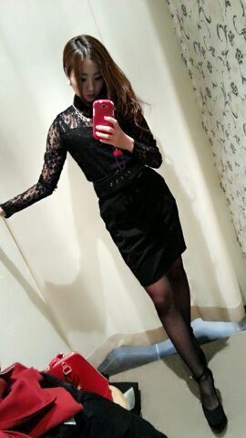
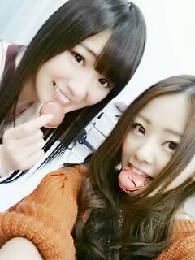

皆さん、おはようございます(。・ω・。)ゞはーと。
ろってぃーだよ.*
らぶりーろってぃ−はどう...？
ゆるトゥイン + リボン + ピンク+ ふわふわ。
ひめたん と さゆにゃんになった気分ね.*
あ.そーいや こないだ夜
さゆにゃん家で一緒にDVD見ました.
コンビニで 炭酸ジュースを２本選んで
二人で飲みながら おしゃべりしながら見てまちた.*
さゆにゃん いぇあ〜\(*・ω・)/
\( 〃▽〃)/( 〃▽〃)/( 〃▽〃)/( 〃▽〃)/( 〃▽〃)/
昨晩、 『乃木坂って、どこ？』
見て頂けたでしょうか...笑
ウェーーーン(´；ω；｀)
どうして〜 ろってぃ−の番 一瞬で終わったよね 笑
でも いいもん.♪
かずみんに 想いを伝えられたことが幸せなのです
(/-＼*)いやん.
都内に出て 一生懸命 かずみのスタイルを
いかせるような 洋服を選んできました..*
すっごい 楽しかった ウギウギ.♪
色々 お店で試着してたんだけど、
ろってぃーと かずみん 身長も骨格も
顔のジャンルも全然違うんよね！
人によって 体の形って 色々じゃん？
だから、かずみんの自撮り写真と
にらめっこしたりして
『これ入るかな〜？
いやっ これはかずみんの足にはブカブカかなぁ〜？』とか考えたりして、
ちょっと その難しいけど 楽しい！ってのが
本当に 嬉しゅうキモチでした(ノ´∀｀*)
ろってぃーの勝手な思い込みで
番組で かずみんが実際に着てくれるのかと思ってたのね、だから
『日本中の皆さんに かずみんのスタイルの良さを知ってほしい♪』ってコメントをしちゃったのです*^^*
それで たくさんの方が かずみんのことを見て
『かずみんに モデルのお仕事のオファーがこないかな？？』
だとか 勝手にめっちゃ妄想してました(#^.^#)あは
これは お店の試着roomで撮ったんだけど、
ぁ、これは 私ろってぃーね //

かずみんが 着るとまた違う感じになると思うの(/-＼*)
きっと かずみん 写メ載せてくれるはず！
載せなかったら、載せてくださいかずみ樣。って頼む\(*´ω`*)/
皆さんっ そして かずみ推しの皆さんっ!!!
お楽ちみに 、、、 テヘ.♪
あと、これが かずみんにあげた マカロンです.♪

かずみんが、一つろってぃも食べていいよ*^^*
って言ってくれたから、一つ頂きました.*
これは 表参道にある
チョコレート専門店に買いに行きました。
では、 これからお仕事なのですが、
朝から 急いで買い物してきたってゆうね.//
浄水器てきなものとかねっ .♪
クレンジングオイルも買いに行かなきゃだ(;o;)
ではではっ、 明日 握手会 楽しみましょうね./
のし。 Rotty.☆